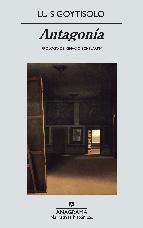
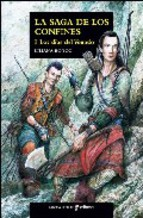

Thu, 01 Mar 2012 06:00:27 +0000
Hombres de honor de Xavier Bosch
Hombres de honor de Xavier Bosch
Título: Hombres de honor Autor: Xavier Bosch País: España Año de publicación: 2012 ISBN: 9788423322145 El periodista y escritor catalán Xavier Bosch acaba de publicar su más reciente libro, Hombres de honor, basado en una historial real. “Estaba sentado en la plaza del Rei y se me acercó un señor para contarme que el incendio [...]
Título: Hombres de honor
Autor: Xavier Bosch
País: España
Año de publicación: 2012
ISBN: 9788423322145
El periodista y escritor catalán Xavier Bosch acaba de publicar su más reciente libro, Hombres de honor, basado en una historial real. “Estaba sentado en la plaza del Rei y se me acercó un señor para contarme que el incendio del Liceo no fue tal como dice la versión oficial, pero me hizo prometer que no lo explicaría”. Esta historia también le ocurre a Dani Santana, el protagonista.
Luego de dejar la dirección del diario Crónica, el periodista vuelve a la televisión como presentador de un programa de reportajes con el que pronto consigue entrevistar a Tuzza Talese, la mujer de un miembro encarcelado de la mafia siciliana. Amenazada de muerte por divulgar en un libro los secretos de la organización, Tuzza, una mujer que aparenta dureza, vive escondida y desconfiando de todo el mundo, aunque tal vez en Santana encuentre un aliado. Además, la historia de Tuzza se superpone con la aparición inesperada de un testigo del incendio del Liceo, que viene a complicar la vida del periodista. Habiendo transcurrido quince años desde tan trágico acontecimiento, al alcalde de Barcelona, Antoni Negrier le incomoda la idea de que Santana escarbe en lo ocurrido. Finalmente, un tercer eje de la historia se centra en el padre del alcalde, héroe nacional que sin embargo oculta muchos interrogantes.
Según Bosch, Hombres de honor, ficción periodística, es un libro “sobre los miedos que hacen avanzar a las personas”.
Xavier Bosch es licenciado en Ciencias de la Información. Ha sido director del Avui y responsable de programas de RAC1, además de creador y editor de formatos radiofónicos. Es autor de los libros de cuentos Jo, el simolses y Vicis domèstics, y de la novela breve La Màgia dels reis.
Tue, 28 Feb 2012 06:00:35 +0000
Antagonía de Luis Goytisolo
Antagonía de Luis Goytisolo
Título: Antagonía Autor: Luis Goytisolo País: España Año de publicación: 2012 ISBN: 9788433972378 La editorial Anagrama acaba de reeditar Antagonía, de Luis Goytisolo. Este libro no es sólo obra más ambiciosa y lograda del autor, sino también uno de los emprendimientos literarios más importantes de la novelística española de los últimos cincuenta años. Antagonía trata [...]
Título: Antagonía
Autor: Luis Goytisolo
País: España
Año de publicación: 2012
ISBN: 9788433972378

La editorial Anagrama acaba de reeditar Antagonía, de Luis Goytisolo. Este libro no es sólo obra más ambiciosa y lograda del autor, sino también uno de los emprendimientos literarios más importantes de la novelística española de los últimos cincuenta años. Antagonía trata de la vida. Primordial y llanamente, de la vida.
El protagonista del libro se llama Raúl Ferrer Gaminde. La obra comienza con sus primeros balbuceos infantiles y termina con la novela que él ha escrito, gracias a sus vivencias personales y de la visión del mundo que la experiencia le ha permitido elaborar. Entre un extremo y otro, los años del franquismo de principio a fin. El amor y la clandestinidad. Las grandes preguntas sobre la vida y la muerte. El oficio de escribir. La pasión por las mujeres de la prima Matilde. Y, en general, una sexualidad desbordante. Es decir: la vida. Una larga y gozosa relación entre el lector y una obra magistral.
Luis Goytisolo pertenece a una familia marcada por la literatura. Sus hermanos son el poeta José Agustín y de novelista Juan. Luis comenzó a estudiar Derecho, carrera que abandonó para dedicarse a la literatura y a luchar contra la dictadura en el Partido Comunista. Publicó sus primeros relatos en 1957, y desde entonces, ha continuado su labor literaria de gran aceptación. Colaborador en prensa, lo ha hecho para periódicos nacionales y para otros extranjeros. En 1994, fue elegido miembro de la Real Academia Española de la Lengua, y en su haber cuenta con diversos premios.
Antagonía es una novela en cuatro libros que fue comenzada en 1973.
Sun, 26 Feb 2012 06:00:51 +0000
Los días del Venado (La Saga de los Confines I) de Liliana Bodoc
Los días del Venado (La Saga de los Confines I) de Liliana Bodoc
Título: Los días del Venado (La Saga de los Confines I) Autor: Liliana Bodoc País: Argentina Año de publicación: 2000 Idioma original: Español Título original: Los días del Venado Páginas: 320 ISBN: 9788435021104 Web: Blog con ilustraciones de la saga. Corría el año 2000 cuando la escritora argentina Liliana Bodoc, que también es profesora y [...]
Título: Los días del Venado (La Saga de los Confines I)
Autor: Liliana Bodoc
País: Argentina
Año de publicación: 2000
Idioma original: Español
Título original: Los días del Venado
Páginas: 320
ISBN: 9788435021104
Web: Blog con ilustraciones de la saga.

Corría el año 2000 cuando la escritora argentina Liliana Bodoc, que también es profesora y licenciada en Letras, publicaba Los días del Venado, su primera novela. Además de cautivar al público –y no sólo al juvenil, para el que estaba inicialmente pensado el libro-, la historia sorprendió a los críticos, en especial porque había muy pocos antecedentes del género épico en la literatura argentina. Los días del Venado recibió un premio en la Feria del Libro de Buenos Aires, y en el año 2002 obtuvo la mención especial de The White Ravens, además de alzarse con otros premios. La obra de Bodoc tiene como antecedentes a Tolkien y a Ursula K. Le Guin, escritora que además ha elogiado el trabajo de la argentina.
Los días del Venado es el primer libro de una trilogía, la Saga de los Confines. Se trata de una fantasía épica que recrea hasta cierto punto la conquista de América, desde el punto de vista de los pueblos originarios. Sin embargo, la propia autora ha aclarado que ha tomado algunos elementos, pero que lo demás es fantasía.
En las Tierras Fértiles habitan muchos pueblos, como los husihuilkes, que viven en el sur, hacia Los Confines. Un día, un hombre llega de muy lejos a buscar a Dulkancellin, uno de sus mejores guerreros. El motivo es que un concilio va a reunirse en la ciudad de Beleram, a muchas jornadas de camino. Pueblos de todas las Tierras Fértiles asistirán para debatir qué camino tomar ante la inminente llegada de unas naves desde las Tierras Antiguas que se hallan al otro lado del mar. Los astrólogos no han podido definir con su magia si los extranjeros que están llegando son amigos o enemigos. Pero si se tratara de la segunda alternativa, la vida de cada una de las criaturas de las Tierras Fértiles esta en peligro.
Por eso, Dukancellin sigue el consejo de Kupuka, el Brujo de la Tierra, y acompaña al representante de Beleram, dejando atrás a sus cinco hijos al cuidado de la Vieja Kush. Sabe que, para bien o para mal, los días en las Tierras Fértiles tal como los habían conocido han terminado.
Opinión personal: Este primer tomo de La Saga de los Confines me resultó sumamente cautivante. Escrito con una prosa que combina dosis de poesía con emoción e intriga, poblado por personajes inolvidables y vueltas de tuerca que sorprenden a la vuelta de cada página, el libro de Liliana Bodoc es uno de ésos que no queremos soltar. ¡No puedo esperar a leer la segunda parte!